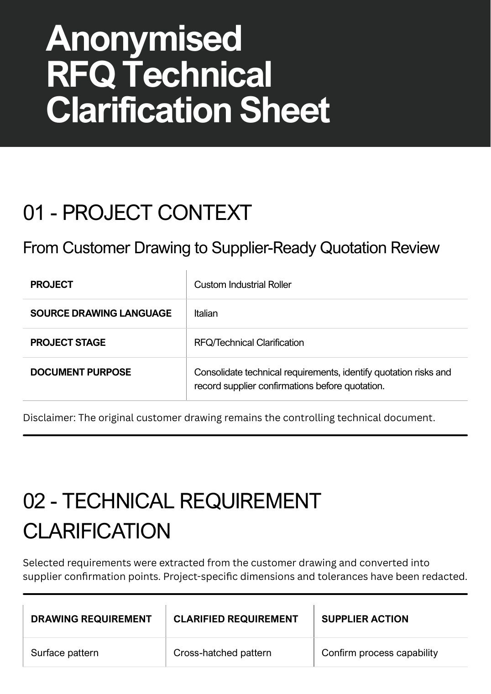
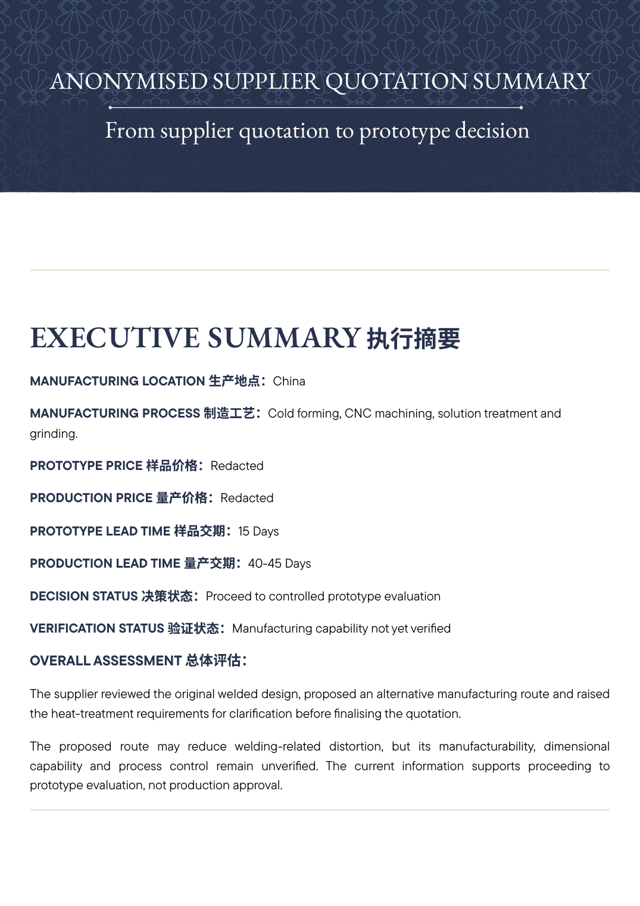
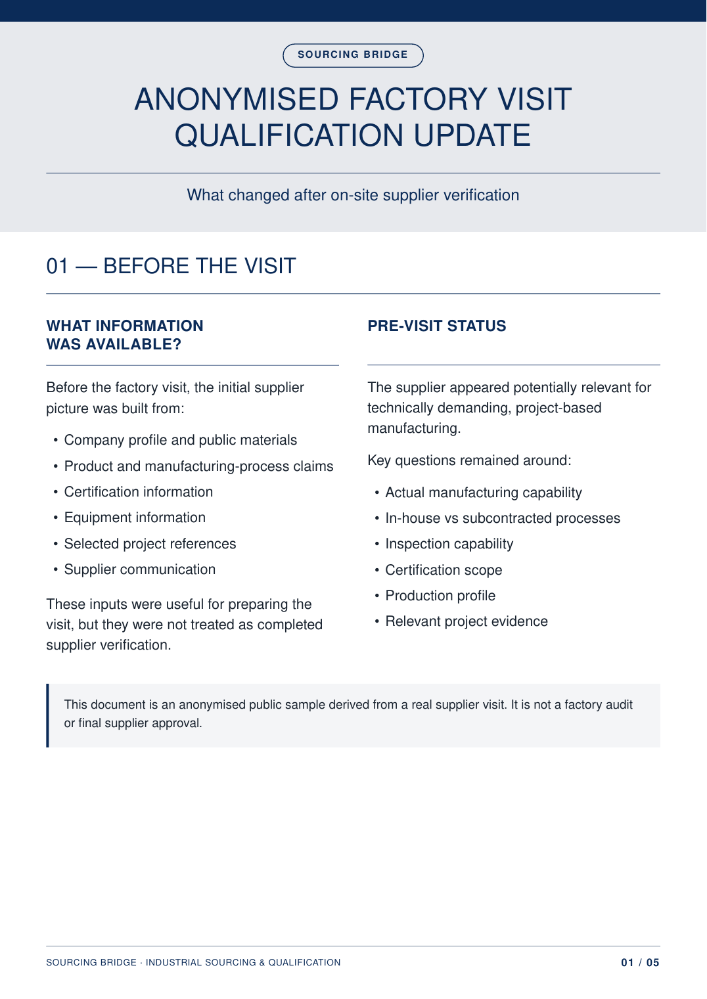

01
SUPPLIER
IDENTIFICATION
Find and pre-screen relevant Chinese suppliers against technical, commercial and project-fit requirements.
Supplier qualification and project coordination in China for European and Latin American industrial buyers.
Find and pre-screen relevant Chinese suppliers against technical, commercial and project-fit requirements.
Clarify drawings, specifications, materials and key assumptions before quotations are compared.
Factory visits, capability verification, quality review, supplier evidence and project-fit assessment.
Quotation comparison, supplier communication, production follow-up and issue coordination in China.
Review drawings, specifications, volumes, timing, current pain points and the decision the buyer actually needs to make.
Build a supplier pool, filter obvious mismatches and record what is confirmed, supplier-stated, unverified or unknown.
Make process assumptions, deviations, inspection requirements and technical gaps visible before price comparison.
Use documentation, technical discussion or factory visits to verify the capabilities that matter to the project.
Support prototype, RFQ, production follow-up or issue resolution with clear ownership and recorded actions.
Sourcing Bridge is most useful where drawings, process routes, quality expectations or project volumes require more judgement than a catalogue search.
Anonymised examples derived from real project work. Sensitive commercial, supplier and technical identifiers have been removed.

Drawing requirements → supplier confirmation points → open technical questions before price comparison.
OPEN PDF ↗
Confirmed requirements, supplier assumptions, commercial gaps and prototype verification points in one decision view.
OPEN PDF ↗
What the visit clarified, what remained supplier-stated and what still required verification.
OPEN PDF ↗Sourcing Bridge supports industrial buyers that need a reliable China-side sourcing interface without building a large local procurement function.
The work is led directly by Lisha Zheng and combines supplier search, qualification, technical clarification, factory coordination and project follow-up. The emphasis is on documented decisions, visible risks and clear ownership rather than supplier introductions alone.
Send the requirement, drawing, supplier situation or problem you are trying to solve. If the project is not a good fit for Sourcing Bridge, we will say so.